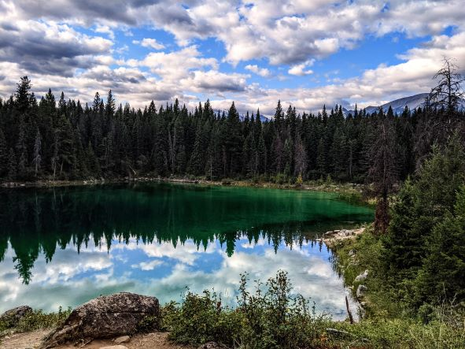

My Camping Trip Through the Canadian Rockies
Alberta is home to some of the most impressive mountains in Canada; I was lucky enough to explore them during my roadtrip from Montreal to Vancouver.
Check out some of my favorite campgrounds and hikes of various levels on my map below!
Legend
Bertha Lake Meadows, Waterton Lakes

Emerald Lake, Jasper